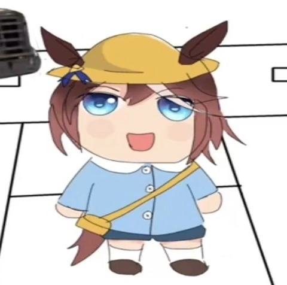

La Misión de las Estrellas
El padre Buenaventura Suárez construye un telescopio de cuarzo y escribe el primer calendario astronómico del Cono Sur en 1706.
Jugar RelatoProyecto de
Relatos Ocultos de Paraguay
"Relatos Ocultos: HISTORIA de Paraguay" no es solo un videojuego; es un portal interactivo para descubrir los misterios y héroes olvidados de nuestra patria. Sumérgete en recreaciones fieles de eventos que formaron nuestra identidad.
Basado en crónicas históricas reales, actas oficiales y correspondencia del Paraguay de los siglos XVIII y XIX.
Cada decisión tomada influye en el desenlace del relato. Controla el curso de los eventos con tus elecciones morales.
Utiliza nuestro motor integrado para redactar tus propios pasajes interactivos y compartirlos con la comunidad.
Pasajes jugables que te transportarán a momentos clave de nuestra tierra.
El padre Buenaventura Suárez construye un telescopio de cuarzo y escribe el primer calendario astronómico del Cono Sur en 1706.
Jugar RelatoAventúrate en los oscuros pasillos y túneles del palacio gubernamental durante los caóticos días finales de la Guerra de la Triple Alianza.
Jugar RelatoAcompaña a Pedro Juan Caballero y Vicente Ignacio Iturbe en la tensa medianoche de mayo de 1811 para derrocar al Gobernador Velasco.
Jugar RelatoQueremos que seas parte del desarrollo. Relatos Ocultos cuenta con un completo editor de escenarios que te permite redactar tramas, decisiones e investigaciones históricas.
Crea pasajes jugables y ramificados para Relatos Ocultos:
"¡El Gobernador Velasco ha aceptado entregar el cuartel sin derramar sangre! Pedro Juan y Vicente ya están firmando la capitulación. ¡Paraguay es libre!"
(Haz clic para más info)
(Haz clic para más info)

(Haz clic para más info)
Descarga el juego gratis y experimenta los relatos interactivos desde tu PC o teléfono inteligente Android.